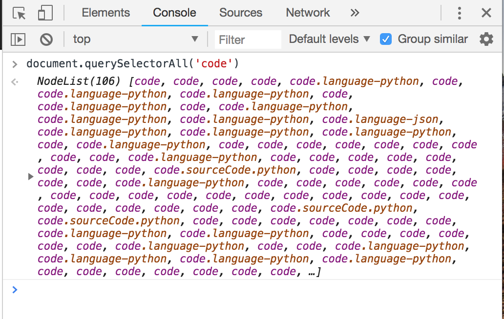
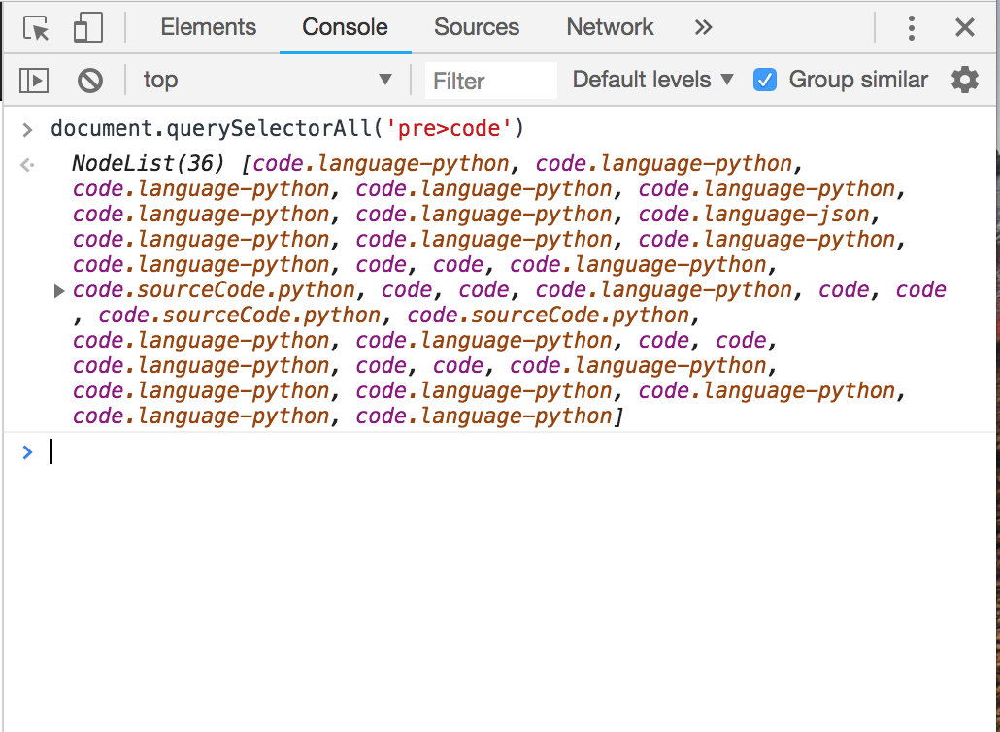
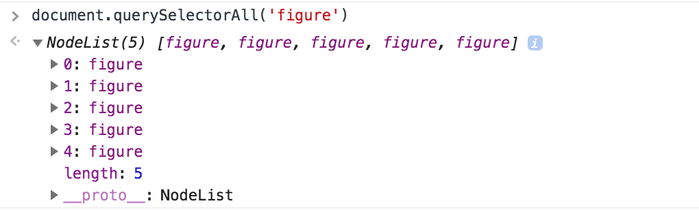
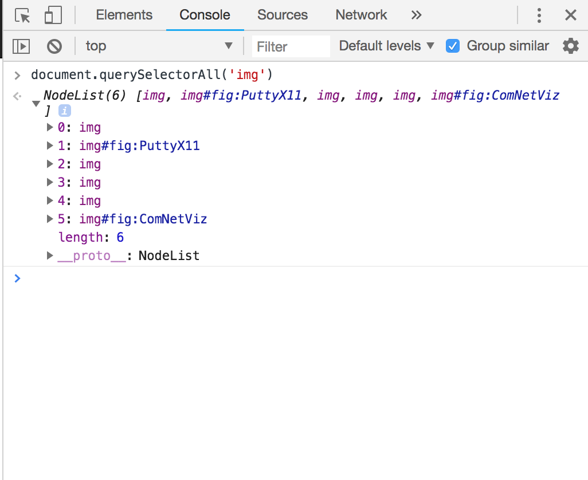
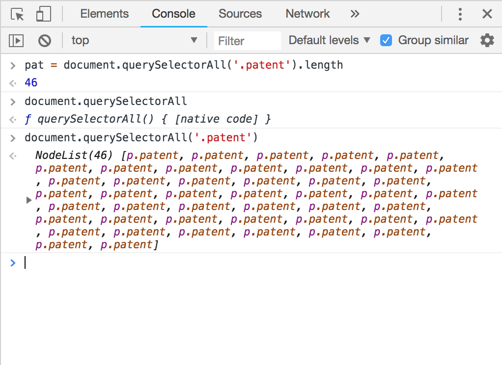
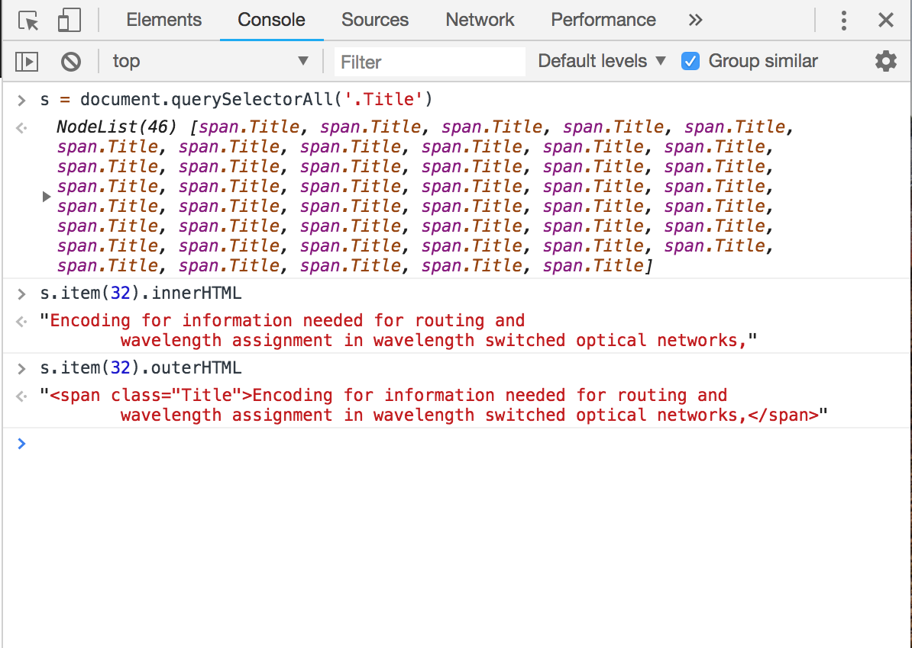

Week #2 Questions and Answers
Question 1
JavaScript practice with simple loops: Write JavaScript code in your browsers developer tool console to produce a list of squares and cubes for numbers from 1 to 10. Take a screen capture showing the code and result. Include this screen shot as an image to answer this question.
Question 2
CSS selector practice and web site structure: Go to the SDN Fun page on my website. We are going to use the developer tools and the DOM function document.QuerySelectorAll(css_selector_string) to test some selectors and look at document structure.
- What is the CSS selector that you would use to select all the
<code>elements? How many are there? - What is the CSS selector that you would use to select all the
<code>elements contained in<pre>elements? How many are there? Are there more or less than above. Why? - What is the CSS selector that you would use to select all the
<figure>elements? How many are there? - What is the CSS selector that you would use to select all the
<img>elements? How many are there? Is this different from the above? Why?
- 
There are 106<code>elements as shown in the image with NodeList(106). - There are 36
<code>elements contained in<pre>elements which is less than 106. Since we are only counting elements in the<pre>elements whereas before we counted all the<code>elements in the page. - 
There are 5<figure>elements as shown in the image with NodeList(5). - 
There are 6<img>elements as shown in the image with NodeList(6) whereas there as 5<figure>elements. It is different because the<img>element represents an image and the<figure>element represents a unit of content with a caption mostly. Images are referenced to the HTML page whereas figure is a part of the document.
Question 3
- Find the number of patents on the page and put the number into a JavaScript variable with a name of your choosing. Hint each patent is in its own paragraph with
class="patent"Take a screen shot of your code and use that as an answer. - Figure out how to get the title as a plain JavaScript string for any patent on the page. Show your method works with the 33rd patent listed. Take a screen shot of your code and answer. Hint each patent’s title is in a span element with
class=Titleand you can get content from a DOM element via theinnerHTMLandouterHTMLproperties.
- 
- The 33rd element has index 32. So I displayed the title using index 32 with both innerHTML and outerHTML.
Question 4
DOM or Document Object Model is created by the browser when the web page is loaded. With the help of DOM, JavaScript can change the contents of the HTML page dynamically, debugging can be done on the browser itself. HTML elements, its attributes, CSS style all can be changed or created dynamically. DOM serves as an interface to HTML. Whereas HTML is not dynamic but static. HTML is used to create the web pages, and DOM is used to change/add contents to it dynamically.